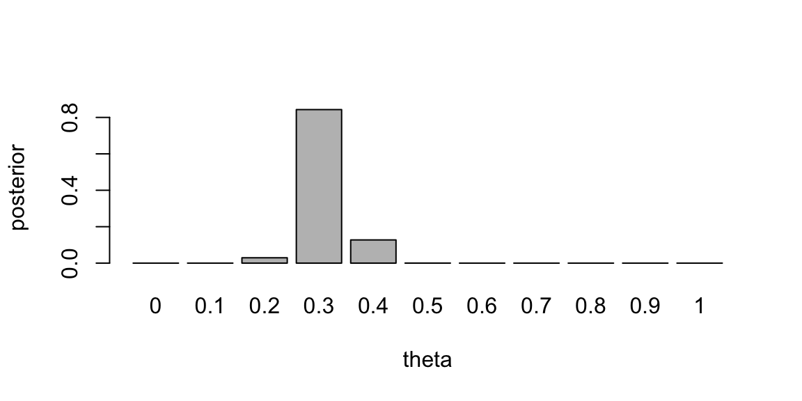
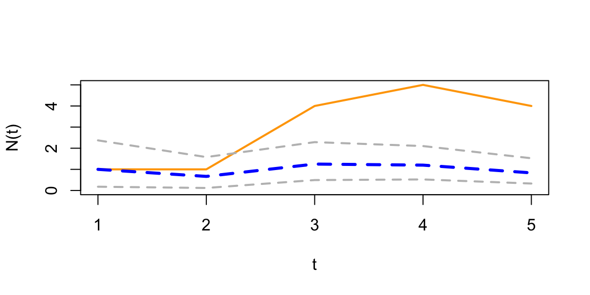
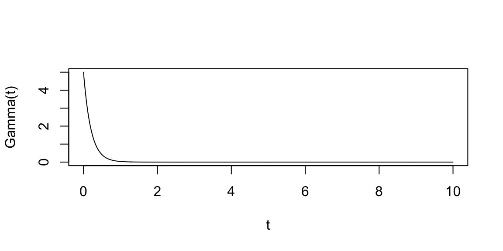
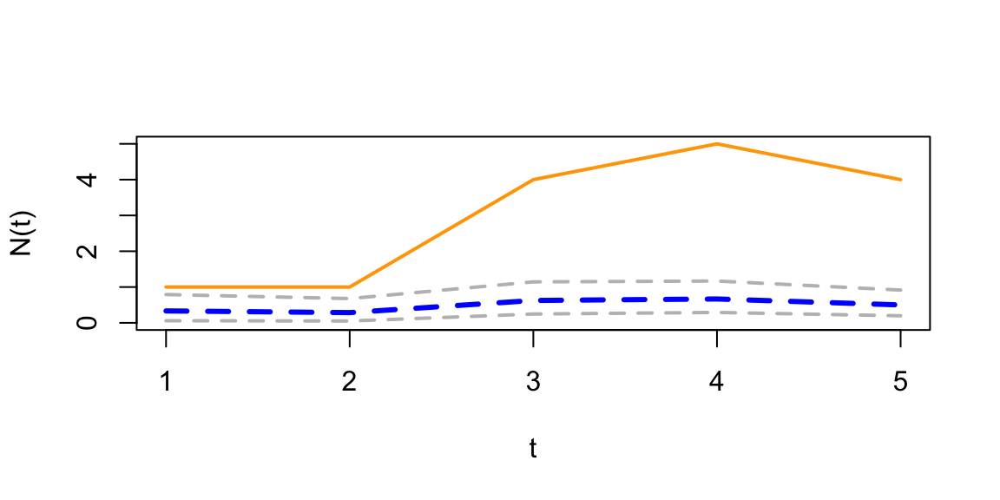

theta <- seq(0, 1, by = 0.1)
prior <- c(0, 0.024, 0.077, 0.132, 0.173, 0.188, 0.173, 0.132, 0.077, 0.024, 0)3 Bayesian Learning
“A Wise man proportions his beliefs to the evidence.” – David Hume
Statistics makes use of parametric families of distributions and often assumes that observed samples \(y = (y_1,\ldots,y_n)\) are independent and identically distributed observations from a distribution with density function parametrized by \(\theta\), the notation is \(y\mid \theta \sim p(y \mid \theta)\). The functional form of \(p(y \mid \theta)\) is assumed to be known, but the value of \(\theta\) is unknown. The goal of statistical inference is to estimate \(\theta\) from the observed data \[ y = (y_1,\ldots,y_n). \]
The main tasks in statistical inference include estimation, hypothesis testing, and prediction. Estimation involves using the observed sample to infer the value of the unknown parameter \(\theta\), either by providing a single best guess (denoted as \(\hat{\theta}\)) or by constructing an interval \([a, b]\) that is likely to contain the true value of \(\theta\) with a specified probability. Hypothesis testing focuses on evaluating specific claims or hypotheses about the value of \(\theta\); for instance, we might be interested in determining whether \(\theta\) is equal to a particular value \(\theta_0\). Prediction, on the other hand, is concerned with forecasting the value of a future observation \(y_{n+1}\) based on the data already observed, \(y_1, \ldots, y_n\) via a model \(p(y_{n+1} \mid y_1, \ldots, y_n)\).
In this section we present a general framework for statistical inference, known as Bayesian inference, which is based on the use of probability distributions to represent uncertainty and make inferences about unknown parameters. We will use Bayes rule to update our beliefs about the parameters of a model based on new evidence or data. Bayesian inference provides a principled approach to statistical modeling and decision-making.
Bayesian analysis always starts with specifying the two main components of the model:
- Prior \(p(\theta)\) represents your beliefs or knowledge about the parameters before observing any data. This distribution encapsulates the uncertainty about the parameters.
- Likelihood Function (Data Likelihood): \(p(y \mid \theta)\) describes the likelihood of observing the given data given the current values of the parameters. When we have independent and identically distributed \(y = (y_1, \ldots, y_n)\), the likelihood function is given by \[ p(y \mid \theta) = \prod_{i=1}^n p(y_i \mid \theta). \]
The estimation problem is also called Bayesian parameter learning; the goal is then to update the probability distribution over the parameters of the model as new data becomes available. Suppose that you are interested in the values of \(k\) unknown quantities \[ \theta = (\theta_1, \ldots, \theta_k). \] Then learning is done by updating the prior distribution over the parameters of the model as new data becomes available and calculating the posterior distribution over the parameters. The posterior distribution represents the updated beliefs about the parameters after incorporating the observed data. It combines the prior distribution and the likelihood function using Bayes’ theorem: \[ p( \theta \mid y ) = \frac{p(y \mid \theta)p( \theta)}{p(y)} = \frac{\text{Likelihood} \times \text{Prior}}{\text{Marginal}}. \] The left hand side \(p( \theta | y )\) is the posterior distribution, and \(p(y)\) is the probability of the observed data (also known as the total probability) given by \[ p(y) = \int p(y \mid \theta)p( \theta)d \theta \]
Nice feature of the Bayes approach is that you can use the posterior distribution obtained from one round of observation as the prior distribution for the next round when more data becomes available. This process can be iteratively repeated as new evidence is acquired. It makes sequential learning possible.
The downstream tasks then use the posterior distribution. For example, if we want to predict the value of a future observation \(y_{n+1}\) based on the data already observed, \(y_1, \ldots, y_n\) via a model \(p(y_{n+1} \mid y_1, \ldots, y_n, \theta)\), we can use the posterior distribution to calculate the expected value of \(y_{n+1}\) as \[ p(y_{n+1} \mid y_1, \ldots, y_n) = \int p(y_{n+1} \mid y_1, \ldots, y_n, \theta)p(\theta \mid y_1, \ldots, y_n)d \theta. \] You can think of prediction as a mixture of the conditional distributions \(p(y_{n+1} \mid y_1, \ldots, y_n, \theta)\) weighted by the posterior distribution \(p(\theta \mid y_1, \ldots, y_n)\).
A simple hypothesis test then involves calculating the probability of the observed data under the null hypothesis \(H_0\) as \[ p(y \mid H_0) = \int p(y \mid \theta)p(\theta \mid H_0)d \theta. \]
bThe downside of the Bayes approach is the requirement to calculate the marginal likelihood \(p(y)\), which often requires calculating high-dimensional integrals that are intractable (do not have closed-form solutions). However, often, Bayesian analysis can be performed without calculating the marginal likelihood, in this case we omit the total probability in the denominator on the right hand side and write Bayes rule as \[ \text{Posterior} \propto \text{Likelihood} \times \text{Prior}. \]
The choice of prior distribution can significantly impact the ease of computation and the interpretation of the posterior distribution. Conjugate priors are a special type of prior distribution that, when combined with a specific likelihood function, result in a posterior distribution that belongs to the same family as the prior. This property simplifies the computation of the posterior distribution, and allows for analytical solutions.
Common examples of conjugate priors include:
Normal distribution with known variance: If the likelihood is a normal distribution with known variance, then a normal distribution is a conjugate prior for the mean.
Binomial distribution: If the likelihood is a binomial distribution, then a beta distribution is a conjugate prior for the probability of success.
Poisson distribution: If the likelihood is a Poisson distribution, then a Gamma distribution is a conjugate prior for the rate parameter.
Using conjugate priors simplifies the Bayesian analysis, especially in cases where analytical solutions are desirable. However, the choice of a conjugate prior is often a modeling assumption, and in some cases, non-conjugate priors may be more appropriate for capturing the true underlying uncertainty in the problem. The blind use of conjugate priors can lead to misleading results. We should never ignore the absence of evidence for use of a specific model.
3.1 Exchangeability and the Bayesian view of probability models
At the basis of all statistical problems is a potential sample of data, \(y=\left( y_{1},\ldots,y_{T}\right)\), and assumptions over the data generating process such as independence, a model or models, and parameters. How should one view the relationship between models, parameters, and samples of data? How should one define a model and parameters? These questions have fundamental implications for statistical inference and can be answered from different perspectives. We will discuss de Finetti’s representation theorem which provides a formal connection between data, models, and parameters.
To understand the issues, consider the simple example of an experiment consisting of tosses of a simple thumb tack in ideal “laboratory” conditions. The outcome of the experiment can be defined as a random variable \(y_{i},\) where \(y_{i}=1\) if the \(i^{th}\) toss was a heads (the tack lands on the spike portion) and \(y_{i}=0\) if the tack lands tails (on its flat portion). How do we model these random variables? The frequentist or objective approach assumes tosses are independent and identically distributed. In this setting, independence implies that \[ P\left( y_{2}=1,y_{1}=1\right) =P\left( y_{2}=1\right) P\left( y_{1}=1\right). \]
Given this, are thumbtack tosses independent? Surprisingly, the answer is no. Or at least absolutely not under the current assumptions. Independence implies that \[ P\left( y_{2}=1 \mid y_{1}=1\right) =P\left( y_{2}=1\right), \] which means that observing \(y_{1}=1\) does not affect the probability that \(y_{2}=1\). To see the implications of this simple fact, suppose that the results of 500 tosses were available. If the tosses were independent, then \[ P\left( y_{501}=1\right) =P\left( y_{501}=1\mid {\textstyle\sum\nolimits_{t=1}^{500}}y_{t}=1\right) =P\left( y_{501}=1\mid {\textstyle\sum\nolimits_{t=1}^{500}}y_{t}=499\right). \] It is hard to imagine that anyone would believe this–nearly every observer would state that the second probability is near zero and the third probability is near 1 as the first 500 tosses contain a lot of information. Thus, the tosses are not independent.
To see the resolution of this apparent paradox, introduce a parameter, \(\theta\), which is the probability that a thumb tack toss is heads. If \(\theta\) were known, then it is true that, conditional on the value of this parameter, the tosses are independent and \[ P\left( y_{2}=1\mid y_{1}=1,\theta\right) =P\left(y_{2}=1\mid \theta\right) =\theta. \] Thus, the traditional usage of independence, and independent sampling, requires that “true” parameter values are known. With unknown probabilities, statements about future tosses are heavily influenced by previous observations, clearly violating the independence assumption. Ironically, if the data was really independent, we would not need samples in the first place to estimate parameters because the probabilities would already be known! Given this, if you were now presented with a thumb tack from a box that was to be repeatedly tossed, do you think that the tosses are independent?
This example highlights the tenuous foundations, an odd circularity, and the internal inconsistency of the frequentist approach that proceeds under the assumption of a fixed “true” parameter. All frequentist procedures are founded on the assumption of known parameter values: sampling distributions of estimators are computed conditional on \(\theta\); confidence intervals consist of calculations of the form: \(P\left( f\left( y_{1}, \ldots ,y_{T}\right) \in\left( a,b\right) |\theta\right)\); and asymptotics also all rely on the assumption of known parameter values. None of these calculations are possible without assuming the known parameters.
In the frequentist approach, even though the parameter is completely unknown to the researcher, \(\theta\) is not a random variable, does not have a distribution, and therefore inference is not governed by the rules of probability. Given this “fixed, but unknown” definition, it is impossible to discuss concepts like “parameter uncertainty.” This strongly violates our intuition, since things that are not known are typically thought of as random.
The Bayesian approach avoids this internal inconsistency by shedding the strong assumption of independence and assumption of a fixed but unknown parameter. Instead it assumes that \(\theta\) is a random variable and describes the uncertainty about \(\theta\) using a probability distribution, \(p\left( \theta\right)\) (the prior). The joint distribution of the data is then \[ p(y_{1}, \ldots ,y_{T}) = \int p(y_{1}, \ldots ,y_{T} \mid \theta) p(\theta)d\theta = \int\prod_{t=1}^Tp(y_t\mid \theta) p( \theta)d\theta. \] Notice, that the right-hand-side does not depend on the order of the data, and the joint distribution of the data is the same for all potential orderings. This is a natural assumption about the symmetry of the data, and is called exchangeability. The Bayesian approach makes no assumptions about the order in which the data may arrive, and each observation has the same marginal distribution, \(P\left( y_{i}=1\right) =P\left(y_{j}=1\right)\) for any \(i\) and \(j\).
Thus, we replace the independence assumption with a weaker and more natural assumption of exchangeability: a collection of random variables, \(y_{1}, \ldots ,y_{T}\), is exchangeable if the distribution of \(y_{1}, \ldots ,y_{T}\) is the same as the distribution of any permutation \(y_{\pi_{1}}, \ldots ,y_{\pi_{T}}\), where \(\pi=\left( \pi_{1}, \ldots ,\pi_{T}\right)\) is a permutation of the integers \(1\) to \(T\). Independent events are always exchangeable, but the converse is not true. Notice the differences between the assumptions in the Bayesian and frequentist approach: the Bayesian makes assumptions over potentially realized data, and there is no need to invent the construct of a fixed but unknown parameter, since exchangeability makes no reference to parameters.
In the case of the tack throwing experiment, exchangeability states that the ordering of heads and tails does not matter. Thus, if the experiment of 8 tosses generated 4 heads, it does not matter if the ordering was \(\left(1,0,1,0,1,0,1,0\right)\) or \(\left( 0,1,1,0,1,0,0,1\right)\). This is a natural assumption about the symmetry of the tack tosses, capturing the idea that the information in any toss or sequence of tosses is the same as any other–the idea of a truly random sample. It is important to note that exchangeability is a property that applies prior to viewing the data. After observation, data is no longer a random variable, but a realization of a random variable.
Bruno de Finetti introduced the notion of exchangeability, and then asked a simple question: “What do exchangeable sequences of random variables look like?” The answer to this question is given in the famous de Finetti’s theorem, which also defines models, parameters, and provides important linkages between frequentist and classical statistics.
de Finetti’s representation theorem
de Finetti’s representation theorem provides the theoretical connection between data, models, and parameters. It is stated first in the simplest setting, where the observed data takes two values, either zero or one, and then extended below.
Theorem 3.1 (de Finetti’s representation theorem) Let \(\left( Y_{1},Y_{2},\ldots\right)\) be an infinite sequence of 0-1 exchangeable random variables with joint density \(p\left(Y_{1}, \ldots ,Y_{n}\right)\). Then there exists a distribution \(P\) such that \[ P(Y_{1}=y_1,\ldots,Y_{n}=y_n)=\int\prod_{i=1}^{n}\theta^{y_{i}}(1-\theta)^{1-y_{i}}dP(\theta)=\int\prod_{i=1}^{n}p\left( y_{i} \mid \theta\right) dP(\theta) \tag{3.1}\] where \[ P(\theta)=\lim_{n\rightarrow\infty}\text{Prob}\left[ \frac{1}{n}\sum_{t=1}^{n}Y_{t}\leq\theta\right] \text{ and }\theta=\lim_{n\rightarrow\infty}\frac{1}{n}\sum_{t=1}^{n}Y_{t}. \] If the distribution function or measure admits a density with respect to Lebesgue measure, then \(dP(\theta)=p\left( \theta\right) d\theta\).
Heath and Sudderth (1976) provide a general version and simple proof. For general spaces \(\mathcal{Y}\), we have \[ P(Y_1 \le y_1, \ldots, Y_n \le y_n) = \int_{\mathcal{F}} \prod_{i=1}^{n} F(y_i) \, \mu(dF) \] where \(\mu(\cdot)\) is a measure over the space of distributions, \(\mathcal{F}\). In the parametric case, \(F_\theta\), then \(\mu(d\theta) = p(\theta) d\theta\) and \(p(\theta)\) is the typical prior density. The predictive \(p(Y_{n+1} \mid y_1, \ldots, y_n)\) is then a marginal over \(F_\theta\) and the posterior \(p(\theta \mid y_1, \ldots, y_n)\) which is updated via Bayes theorem.
de Finetti’s representation theorem has profound implications for understanding models from a subjectivist perspective and in relating subjectivist to frequentist theories of inference. The theorem is interpreted as follows:
Under exchangeability, parameters exist, and one can act as if the \(y_{i}\)’s are drawn independently from a Bernoulli distribution with parameter \(\theta\). That is, they are draws from the model \(p\left(y_{i} \mid \theta\right) =\theta^{y_{i}}(1-\theta)^{1-y_{i}},\) generating a likelihood function \(p\left( y \mid \theta\right) =\prod_{i=1}^{n}p\left(y_{i} \mid \theta\right)\). Formally, the likelihood function is defined via the density \(p\left( y \mid \theta\right)\), viewed as a function of \(\theta\) for a fixed sample \(y=\left( y_{1}, \ldots ,y_{n}\right)\). More "likely" parameter values generate higher likelihood values, thus the name. The maximum likelihood estimate (MLE) is \[ \widehat{\theta}_{\mathrm{MLE}}=\arg\underset{\theta\in\Theta}{\max}\text{ }p\left(y \mid \theta\right) =\arg\underset{\theta\in\Theta}{\max}\ln p\left(y \mid \theta\right), \] where \(\Theta\) is the parameter space.
Parameters are random variables. The limit \(\theta=\underset {n\rightarrow\infty}{\lim}n^{-1}\sum_{i=1}^{n}y_{i}\) exists but is a random variable. This can be contrasted with the strong law of large numbers that requires independence and implies that \(n^{-1}\sum_{i=1}^{n}y_{i}\) converges almost surely to a fixed value, \(\theta_{0}\). From this, one can interpret a parameter \(\theta\) as a limit of observables and justifies the frequentist interpretation of \(\theta\) as a limiting frequency of 1’s.
The distribution \(P\left( \theta\right)\) or density \(p\left(\theta\right)\) can be interpreted as beliefs about the limiting frequency \(\theta\) prior to viewing the data. After viewing the data, beliefs are updated via Bayes rule resulting in the posterior distribution, \(p(\theta \mid y_{1},\ldots,y_{n})\).
Since the likelihood function is fixed in this case, any distribution of observed data can be generated by varying the prior distribution.
The main implication of de Finetti’s theorem is a complete justification for Bayesian practice of treating the parameters as random variables and specifying a likelihood and parameter distribution. Stated differently, a “model” consists of both a likelihood and a prior distribution over the parameters. Thus, parameters as random variables and priors are a necessity for statistical inference, and not some extraneous component motivated by philosophical concerns.
More general versions of de Finetti’s theorem are available. A general version is as follows. If \(\left\{ Y_{i}\right\} _{i\geq1}\), \(Y_{i}\in\mathbb{R}\), is a sequence of infinitely exchangeable random variables, then there exists a probability measure \(P\) on the space of all distribution functions, such that \[ p(Y_{1}\le y_{1},\ldots,Y_{n}\le y_{n})=\int\prod_{i=1}^{n}F\left( y_{i}\right) P(dF) \] with mixing measure \[ P\left( F\right) =\underset{n\rightarrow\infty}{\lim}P(F_{n}), \] where \(F_{n}\) is the empirical distribution of the data. At this level of generality, the distribution function is infinite-dimensional. In practice, additional subjective assumptions are needed that usually restrict the distribution function to finite dimensional spaces, which implies that the distribution function is indexed by a parameter vector \(\theta\): \[ p(Y_{1}\le y_{1},\ldots,Y_{n}\le y_{n})=\int\prod_{i=1}^{n}p\left( Y_{i} \mid \theta\right) dP\left( \theta\right). \] To operationalize this result, the researcher needs to choose the likelihood function and the prior distribution of the parameters.
Posterior Empirical CDF
Let \(m = \{ f_\theta ( y ) : y \in \mathcal{Y} \}\) be a model. When necessary we index the parameters in model \(m\), as \(\theta_m\). Let \(y = ( y_1 , \ldots , y_n )\) be a vector of signals. The conditional likelihood, under \(m\), is given by \(f_\theta(y) = \prod_{i=1}^n f_\theta ( y_i )\). We also allow for the possibility that the data is generated from a model \(f\) that does not belong to the family of models \(f_\theta\).
Given a prior measure, \(\Pi ( d F )\), over \(\mathcal{F}\) the set of distributions, we can calculate the predictive density \[ f_n ( y_{n+1} | y_1 , \ldots , y_n ) = \int f (y) \Pi_n ( d F ) \; \text{where}\; \Pi_n ( d f ) = \frac{ \prod_{i=1}^n f( y_i ) \Pi( d f ) }{ \int \prod_{i=1}^n f( y_i ) \Pi( d f ) } \] Under the family, \(f_\theta\), we can calculate the parameter posterior as \[ p( \theta | y ) = \frac{ \prod_{i=1}^n f_\theta ( y_i ) p(\theta) d \theta }{ m(y) } \; \text{where}\; m(y) = \int f_\theta (y) p( \theta ) d \theta \] Here \(p(\theta)\) is a prior distribution over parameters and \(m(y)\) is the marginal distribution of the data implied by the model. There are many applications in Bayesian non-parametric statistics.
At first glance, de Finetti’s theorem may seem to suggest that there is a single model or likelihood function. This is not the case however, as models can be viewed in the same manner as parameters. Denoting a model specification by \(\mathcal{M}\), then de Finetti’s theorem would imply that \[\begin{align*} p(y_{1},\ldots,y_{n}) & =\int\prod_{i=1}^{n}p\left( y_{i} \mid \theta ,\mathcal{M}\right) p\left( \theta \mid \mathcal{M}\right) p\left(\mathcal{M}\right) d\theta d\mathcal{M}\\ & =\int p(y_{1},\ldots,y_{n} \mid \mathcal{M})p\left( \mathcal{M}\right) d\mathcal{M}, \end{align*}\] in the case of a continuum of models. Thus, under the mild assumption of exchangeability, it is as if the \(y_{i}\)’s are generated from \(p\left( y_{i} \mid \theta,\mathcal{M}\right)\), conditional on the random variables \(\theta\) and \(\mathcal{M}\), where \(p\left( \theta \mid \mathcal{M}\right)\) are the beliefs over \(\theta\) in model \(\mathcal{M}\), and \(p\left(\mathcal{M}\right)\) are the beliefs over model specifications.
Subjective probability is a more general definition of probability than the frequentist definition, as it can be used for all types of events, both repeatable and unrepeatable events. A subjectivist has no issues discussing the probability of a lection result, even though the underlying conditions has not been observed before. As Ramsey (1926) puts it, “the probability is simply the willingness to bet on an event with a counterparty”.
The event does not even have to be uncertain in nature. For example, the probability of me having coins in my pocket will depend on who is asked to make the assessment. I, knowing the contents of my pocket, will say the probability is 0. However, if you are asked to make the assessment, you will say the probability is 1/2, as you do not know the contents of my pocket. This is a classic example of subjectivist probability.
Similarly, consider the number of people currently in Antarctica. This number is fixed and deterministic at any given moment, yet different individuals will assign different probability distributions to this quantity based on their knowledge. A researcher who recently reviewed Antarctic population statistics might have a tight distribution centered around the correct value, while someone with no such knowledge might have a much wider distribution. A logistics coordinator for a polar research station would have precise information about personnel at their specific facility but uncertainty about other stations. Each of these represents valid subjective probabilities over the same underlying fixed quantity, illustrating how probability in the Bayesian sense quantifies personal uncertainty rather than intrinsic randomness.
The main difficulty in operationalizing subjective probability is the process of actually quantifying subjective beliefs into numeric probabilities. One practical approach is to elicit probabilities through a sequence of carefully designed bets.
Consider eliciting someone’s probability distribution over the number of people in Antarctica. We could start by asking: “Would you accept a bet that pays $100 if the number is below 5,000, and you pay $50 if it’s above 5,000?” If they accept, this suggests they believe \(P(\text{population} < 5000) > 1/3\). We then adjust the threshold and payoffs systematically. For instance, we might ask about betting on the population being below 2,000, or below 1,000, gradually narrowing down probability mass at different intervals.
For continuous quantities, we can elicit a full distribution through a sequence of binary bets about quantiles. By asking someone to specify values \(q_{0.25}, q_{0.5}, q_{0.75}\) such that they are indifferent between bets paying equal amounts if the true value falls below or above each threshold, we construct their 25th, 50th, and 75th percentiles. This process, known as probability elicitation, transforms abstract beliefs into concrete probability distributions by observing revealed preferences through betting behavior.
The betting framework provides two key advantages. First, it forces coherence: if someone states inconsistent probabilities (such as \(P(A) + P(\neg A) \neq 1\)), an adversary could construct a Dutch book—a set of bets that guarantees a loss regardless of the outcome. The threat of sure loss incentivizes rational probability assignments. Second, betting naturally handles non-repeatable events. We can elicit probabilities about tomorrow’s Supreme Court decision or next quarter’s GDP growth, neither of which has a frequentist interpretation.
Instead of using repetitive experiments, subjective probabilities can be measured using betting odds, which have been used for centuries to gauge the uncertainty over an event. The probability attributed to winning a coin toss is revealed by the type of odds one would accept to bet. Notice the difference between the frequentist and Bayesian approach. Instead of defining the probabilities via an infinite repeated experiment, the Bayesian approach elicits probabilities from an individual’s observed behavior.
3.2 Sufficient Statistic
In Bayesian inference, we need to compute the posterior over unknown model parameters \(\theta\), given data \(y\). The posterior density is denoted by \(p(\theta \mid y)\). A map from data \(y = (y_1, \ldots, y_n)\) to a statistic \(S(y)\) is called a sufficient statistic for \(\theta\) if the conditional distribution of \(y\) given \(S(y)\) is independent of \(\theta\): \[ p(y\mid S(y),\theta) = p(y\mid S(y)). \] This implies that \(S(y)\) captures all the information in the data relevant to \(\theta\). Because the statistic is a deterministic function of the data, the likelihood factorizes as: \[ p(y\mid \theta) = p(S(y)\mid \theta)p(y\mid S(y)). \]
There is a powerful connection between the posterior mean and sufficient statistics in the exponential family. Kolmogorov (1942) showed that if \(S^*(y)\) is a minimal sufficient statistic, then the posterior expectation \(E[\theta \mid y]\) is a function of \(S^*(y)\). This provides a theoretical foundation for using summary statistics in simplified models.
Example 3.1 (Posterior Distribution for Coin Toss) What if we gamble against unfair coin flips or the person who performs the flips is trained to get the side he wants? In this case, we need to estimate the probability of heads \(\theta\) from the data. Suppose we have observed 10 flips \[ \{H, T, H, H, H, T, H, T, H, H\}, \] and only three of them were tails. What is the probability that the next flip will be tail? The frequency-based answer would be \(3/10 = 0.3\). However, the Bayes approach gives us more flexibility. Suppose we have a prior belief that the coin is fair, but we are not sure. We model this belief by a prior distribution. Let’s discretize the variable \(\theta\) and assign prior probabilities to each value of \(\theta\), the prior distribution is shown in Figure 3.1 (left panel).
We put most of the mass to the fair assumption (\(\theta = 0.5\)) and zero mass to the extreme values \(\theta = 0\) and \(\theta = 1\). Our mass is exponentially decaying as we move away from 0.5. This is a reasonable assumption, since we are not sure about the fairness of the coin. Now, we can use Bayes rule to update our prior belief. The posterior distribution is then combines likelihood shown in Figure 3.1 (middle panel) and prior distributions as shown in Figure 3.1 (right panel). \[ p(\theta \mid y) = \frac{p(y \mid \theta) p(\theta)}{p(y)}. \] The denominator is the marginal likelihood, which is given by \[ p(y) = \sum_{\theta} p(y \mid \theta) p(\theta). \] The likelihood is given by the Binomial distribution \[ p(y \mid \theta) \propto \theta^3 (1 - \theta)^7. \] Notice, that the posterior distribution depends only on the number of positive and negative cases. Those numbers are sufficient for the inference about \(\theta\). T
par(mar = c(4, 4, 3, 1))
barplot(prior, names.arg = theta, xlab = "theta", ylab = "prior", col = "lightblue")
likelihood <- function(theta, n, Y) {
theta^Y * (1 - theta)^(n - Y)
}
posterior <- likelihood(theta, 10, 3) * prior
posterior <- posterior / sum(posterior) # normalize
barplot(posterior, names.arg = theta, xlab = "theta", ylab = "posterior", col = "lightblue")
posterior <- likelihood(theta, 100, 30) * prior
posterior <- posterior / sum(posterior) # normalize
barplot(posterior, names.arg = theta, xlab = "theta", ylab = "posterior", col = "lightblue")


If you are to keep collecting more observations and say observe a sequence of 100 flips and 30 of them were heads, then the posterior distribution will be more concentrated around the value of \(\theta = 0.3\) as shown in fig-coinposterior (right panel).
This demonstrates that for large sample sizes, the frequentist approach and the Bayesian approach agree.
3.3 Beta-Binomial Model
The Beta-Binomial Bayesian model is a statistical model that is used when we are interested in learning about a proportion or probability of success, denoted by \(p\). This model is used, for example, when dealing with binary data in A/B testing.
In the Beta-Binomial model, we assume that the the observed data is generated from a Binomial distribution with parameter \(\theta\) and \(m\) trials. The probability of success \(\theta\) in each of \(m\) Bernoulli trials is not fixed but randomly drawn from a Beta distribution. Thus, the model is given by \[ y_i \mid \theta \sim Binomial(m,\theta) ~\text{(likelihood)}, \quad \theta \sim Beta(\alpha,\beta) ~\text{(prior)}. \]
The Beta distribution is a family of continuous probability distributions defined on the interval [0,1] and has two parameters alpha (\(\alpha\)) and beta (\(\beta\)), that appear as exponents of the variable and its complement to 1, respectively, and control the shape of the distribution. The Beta distribution is frequently used in Bayesian statistics, empirical Bayes methods, and classical statistics to model random variables with values falling inside a finite interval.
The probability density function (PDF) of the Beta distribution is given by: \[ Beta(y; \alpha, \beta) = \frac{y^{\alpha - 1}(1 - y)^{\beta - 1}}{B(\alpha, \beta)} \] where \(y \in [0, 1]\), \(\alpha > 0\), \(\beta > 0\), and \(B(\alpha, \beta)\) is the beta function. It is simply a normalizing constant \[ B\left( \alpha,\beta\right) =\int_{0}^{1}y^{\alpha-1}\left( 1-y\right)^{\beta-1}dy . \]
The mean and variance of the Beta distribution are given by: \[ \begin{aligned} \mu &= \frac{\alpha}{\alpha + \beta} \\ \sigma^2 &= \frac{\alpha\beta}{(\alpha + \beta)^2(\alpha + \beta + 1)} \end{aligned} \] where \(\mu\) is the mean and \(\sigma^2\) is the variance.
Figure 3.2 illustrates the Beta distribution for different values of \(\alpha\) and \(\beta\).

The Beta-Binomial model is one of the simplest Bayesian models and is widely used in various fields including epidemiology, intelligence testing, and marketing. It provides the tools we need to study the proportion of interest, \(\theta\), in a variety of settings.
The nice property of the Beta-Binomial model is that the posterior \[ p(\theta \mid y) = \dfrac{p(y \mid \theta)p(\theta)}{p(y)} \] \(p(\theta\mid y)\) is yet another Beta distribution. Beta is called a conjugate prior for the Binomial likelihood and is a very useful property.
When \(m=1\) (observations follow the Bernoulli distribution), the posterior is given by \[ p(\theta\mid Y) = Beta(Y+\alpha, 1-Y+\beta) \] where \(Y\) is the number of successful outcomes \[ Y = \sum_{i=1}^n y_i, \] where \(y_i \mid \theta \sim Bernoulli(\theta)\).
Here the count of successful outcome \(Y\) acts as a sufficient statistic for the parameter \(\theta\). This means that the posterior distribution depends on the data only through the sufficient statistic \(Y\). This is a very useful property and is a consequence of the conjugacy of the Beta prior and Binomial likelihood.
In the case of \(n>1\) (observations follow the Binomial distribution), the posterior is given by \[ \theta\mid Y \sim Beta(Y+\alpha, n-Y+\beta) \] where \(n\) is the number of observations and \(Y\) is the number of successful outcomes as before. \[ Y = \sum_{i=1}^n y_i, \] where \(y_i \mid \theta \sim Binomial(n,\theta)\).
The posterior mean and variance are \[ \mathbb{E}\left[ \theta\mid Y\right] =\frac{\alpha_{n}}{\alpha_{n}+\beta_{n}} \;\text{ and }\; \Var{ \theta\mid Y} =\frac{\alpha_{n}\beta_{n}}{\left( \alpha_{n}+\beta_{n}\right) ^{2}\left( \alpha_{n}+\beta_{n}+1\right) }\text{,} \] where \(\alpha_{n} = \alpha + Y\) and \(\beta_{n} = \beta + n - Y\).
Example 3.2 (Black Swans) A related problem is the Black Swan inference problem. Suppose that after \(n\) trials where \(n\) is large you have only seen successes and that you assess the probability of the next trial being a success as \((T+1)/(T+2)\) that is, almost certain. This is a model of observing White Swans and having never seen a Black Swan. Taleb (2007) makes it sound as if the rules of probability are not rich enough to be able to handle Black Swan events. There is a related class of problems in finance known as Peso problems where countries decide to devalue their currencies and there is little prior evidence from recent history that such an event is going to happen.
To obtain such a probability assessment we use a Binomial/Beta conjugate Bayes updating model. The key point is that it can also explain that there is still a large probability of a Black Swan event to happen sometime in the future. An independence model has difficulty doing this.
The Bayes Learning Beta-Binomial model will have no problem. We model with \(y_{t}=0\) or \(1\), with probability \(P\left( y_{t}=1\mid \theta\right) =\theta\). This is the classic Bernoulli “coin-flipping” model and is a component of more general specifications such as regime switching or outlier-type models.
Let \(Y = \sum_{t=1}^{T}y_{t}\) be the number of observed successful outcomes. The likelihood for a sequence of Bernoulli observations is then \[ p\left( y\mid \theta\right) =\prod_{t=1}^{T}p\left( y_{t}\mid \theta\right) =\theta^{Y}\left( 1-\theta\right)^{T-Y}. \] The maximum likelihood estimator is the sample mean, \(\widehat{\theta} = T^{-1}Y\). This makes little sense when you just observe white swans. It predicts \(\hat{\theta} = 1\) and gets shocked when it sees a black swan (zero probability event). Bayes, on the other hand, allows for “learning”.
Bayes rule then tells us how to combine the likelihood and prior to obtain a posterior distribution, namely \(\theta \mid Y=y\). What do we believe about \(\theta\) given a sequence of observations? It is straightforward to show that the posterior distribution is again a Beta distribution with \[ p\left( \theta\mid y\right) \sim Beta\left( \alpha_{n},\beta_{n}\right) \; \mathrm{ and} \; \alpha_{n}=\alpha+k , \beta_{n}=\beta+T-k. \]
Suppose we have observed \(T=100\) white swans and no black swans (\(Y=100\)). Using a uniform prior \(Beta(1,1)\), the posterior is \(Beta(101,1)\). The predictive probability that the next swan is white is the posterior mean: \[ P(y_{T+1} = 1 \mid Y=100) = \mathbb{E}(\theta \mid Y) = \frac{\alpha_n}{\alpha_n + \beta_n} = \frac{101}{102} \approx 0.99. \] What about the probability of seeing at least one black swan in the next 100 observations? We compute this by integrating over the posterior: \[ P(\text{at least one black swan in next } 100 \mid Y) = \int_0^1 \left[1 - \theta^{100}\right] p(\theta \mid Y) d\theta. \]
## P(next swan is white) = 0.99
## P(at least one black swan in next 100) = 0.5
Despite never having observed a black swan, the Bayesian approach assigns approximately 49.9% probability to seeing at least one black swan in the next 100 trials. This illustrates how Bayesian learning naturally handles rare events by maintaining uncertainty about \(\theta\) through the posterior distribution.
Example 3.3 (Clinical Trials) Consider a problem of designing clinical trials in which \(K\) possible drugs \(a\in 1,\dots,K\) need to be tested. The outcome of the treatment with drug \(a\) is binary \(y(a) \in \{0,1\}\). We use Bernoulli distribution with mean \(f(a)\) to model the outcome. Thus, the full probabilistic model is described by \(w = f(1),\dots,f(K)\). Say we have observed a sample \(D = \{y_1,\dots,y_n\}\). We would like to compute posterior distribution over \(w\). We start with a Beta prior \[ p(w\mid \alpha,\beta) = \prod_{a=1}^K Beta(w_a\mid \alpha,\beta) \] Then the posterior distribution is given by \[ p(w\mid D) = \prod_{a=1}^K Beta(w_a\mid \alpha + n_{a,1},\beta + n_{a,0}) \]
This setup allows us to perform sequential design of experiments. The simplest version of it is called Thompson sampling. After observing \(n\) patients, we draw a single sample \(\tilde w\) from the posterior and then maximize the resulting surrogate \[ a_{n+1} = \arg\max_{a} f_{\tilde w}(a), ~~~ \tilde{w} \sim p(w\mid D) \]
Example 3.4 (Shrinkage and Baseball Batting Averages) The batter-pitcher match-up is a fundamental element of a baseball game. There are detailed baseball records that are examined regularly by fans and professionals. This data provides a good illustration of Bayesian hierarchical methods. There is a great deal of prior information concerning the overall ability of a player. However, we only see a small amount of data about a particular batter-pitcher match-up. Given the relatively small sample size, to determine our optimal estimator we build a hierarchical model taking into account the within pitcher variation.
Let’s analyze the variability in Jeter’s \(2006\) season. Let \(p_{i}\) denote Jeter’s ability against pitcher \(i\) and assume that \(p_{i}\) varies across the population of pitchers according to a particular probability distribution \((p_{i} \mid \alpha,\beta)\sim Be(\alpha,\beta)\). To account for extra-binomial variation we use a hierarchical model for the observed number of hits \(y_{i}\) of the form \[ (y_{i} \mid p_{i})\sim Bin(T_{i},p_{i})\;\;\mathrm{with}\;\;p_{i}\sim Be(\alpha,\beta) \] where \(T_{i}\) is the number of at-bats against pitcher \(i\). A priori we have a prior mean given by \(E(p_{i})=\alpha/(\alpha+\beta)=\bar{p}\). The extra heterogeneity leads to a prior variance \(Var(p_{i})=\bar{p}(1-\bar{p})\phi\) where \(\phi=(\alpha+\beta+1)^{-1}\). Hence \(\phi\) measures how concentrated the beta distribution is around its mean, \(\phi=0\) means highly concentrated and \(\phi=1\) means widely dispersed.
This model assumes that each player \(i\) has a true ability \(p_{i}\) that is drawn from a common distribution. The model is hierarchical in the sense that the parameters \(\alpha\) and \(\beta\) are estimated from the data. The model is also a shrinkage model in the sense that the estimates of \(p_{i}\) are shrunk towards the overall mean \(\bar{p}_{i}\). In reality, we don’t know that each \(p_i\) exists. We also don’t know if it follows a Binomial distribution with the Beta prior. We are making a model assumption. However, the model is a good approximation to the data and is a good way to estimate the parameters.
Stern et al. (2007) estimates the parameter \(\hat{\phi} = 0.002\) for Derek Jeter, showing that his ability varies a bit but not very much across the population of pitchers. The effect of the shrinkage is not surprising. The extremes are shrunk the most with the highest degree of shrinkage occurring for the match-ups that have the smallest sample sizes. The amount of shrinkage is related to the large amount of prior information concerning Jeter’s overall batting average. Overall Jeter’s performance is extremely consistent across pitchers as seen from his estimates. Jeter had a season \(.308\) average. We see that his Bayes estimates vary from\(.311\) to\(.327\) and that he is very consistent. If all players had a similar record then the assumption of a constant batting average would make sense.
| Pitcher | At-bats | Hits | ObsAvg | EstAvg | 95% Int |
|---|---|---|---|---|---|
| R. Mendoza | 6 | 5 | .833 | .322 | (.282, .394) |
| H. Nomo | 20 | 12 | .600 | .326 | (.289, .407) |
| A.J.Burnett | 5 | 3 | .600 | .320 | (.275, .381) |
| E. Milton | 28 | 14 | .500 | .324 | (.291, .397) |
| D. Cone | 8 | 4 | .500 | .320 | (.218, .381) |
| R. Lopez | 45 | 21 | .467 | .326 | (.291, .401) |
| K. Escobar | 39 | 16 | .410 | .322 | (.281, .386) |
| J. Wettland | 5 | 2 | .400 | .318 | (.275, .375) |
| T. Wakefield | 81 | 26 | .321 | .318 | (.279, .364) |
| P. Martinez | 83 | 21 | .253 | .312 | (.254, .347) |
| K. Benson | 8 | 2 | .250 | .317 | (.264, .368) |
| T. Hudson | 24 | 6 | .250 | .315 | (.260, .362) |
| J. Smoltz | 5 | 1 | .200 | .314 | (.253, .355) |
| F. Garcia | 25 | 5 | .200 | .314 | (.253, .355) |
| B. Radke | 41 | 8 | .195 | .311 | (.247, .347) |
| D. Kolb | 5 | 0 | .000 | .316 | (.258, .363) |
| J. Julio | 13 | 0 | .000 | .312 | (.243, .350 ) |
| Total | 6530 | 2061 | .316 |
Some major league managers believe strongly in the importance of such data (Tony La Russa, Three days in August). One interesting example is the following. On Aug 29, 2006, Kenny Lofton (career \(.299\) average, and current \(.308\) average for \(2006\) season) was facing the pitcher Milton (current record \(1\) for \(19\)). He was rested and replaced by a \(.273\) hitter. Is putting in a weaker player really a better bet? Was this just an over-reaction to bad luck in the Lofton-Milton match-up? Statistically, from Lofton’s record against Milton we have \(P\left( \leq 1\;\mathrm{hit\;in}\ 19\;\mathrm{attempts} \mid p=0.3\right) =0.01\) an unlikely \(1\)-in-\(100\) event. However, we have not taken into account the multiplicity of different batter-pitcher match-ups. We know that Lofton’s batting percentage will vary across different pitchers, it’s just a question of how much? A hierarchical analysis of Lofton’s variability gave a \(\phi=0.008\) – four times larger than Jeter’s \(\phi=0.002\). Lofton has batting estimates that vary from \(.265\) to \(.340\) with the lowest being against Milton. Hence, the optimal estimate for a pitch against Milton is \(.265<.275\) and resting Lofton against Milton is justified by this analysis.
3.4 Poisson Model for Count Data
The Poisson distribution is obtained as a result of the Binomial when \(p\) is small and \(n\) is large. In applications, the Poisson models count data. Suppose we want to model the arrival rate of users to one of our stores. Let \(\lambda = np\), which is fixed and take the limit as \(n \rightarrow \infty\). There is a relationship between \(p(x)\) and \(p(x+1)\) given by \[ \dfrac{p(x+1)}{p(x)}= \dfrac{\left(\dfrac{n}{x+1}\right)p^{x+1}(1-p)^{n-x-1}}{\left(\dfrac{n}{x}\right)p^{x}(1-p)^{n-x}} \approx \dfrac{np}{x+1} \] If we approximate \(p(x+1)\approx \lambda p(x)/(x+1)\) with \(\lambda=np\), then we obtain the Poisson pdf given by \(p(x) = p(0)\lambda^x/x!\). To ensure that \(\sum_{x=0}^\infty p(x) = 1\), we set \[ f(0) = \dfrac{1}{\sum_{x=0}^{\infty}\lambda^x/x!} = e^{-\lambda}. \] The above equality follows from the power series property of the exponent function \[ e^{\lambda} = \sum_{x=0}^{\infty}\dfrac{\lambda^x}{x!} \] The Poisson distribution counts the occurrence of events. Given a rate parameter, denoted by \(\lambda\), we calculate probabilities as follows \[ p( X = x ) = \frac{ e^{-\lambda} \lambda^x }{x!} \; \mathrm{ where} \; x=0,1,2,3, \ldots \] For \(n\) independent Poisson observations \(x_1,\ldots,x_n\), the sufficient statistic for \(\lambda\) is the sum \(\sum_{i=1}^n x_i\). The mean and variance of the Poisson are given by:
| Poisson Distribution | Parameters |
|---|---|
| Expected value | \(\mu = \E{X} = \lambda\) |
| Variance | \(\sigma^2 = \Var{X} = \lambda\) |
Here \(\lambda\) denotes the rate of occurrence of an event.
Consider the problem of modeling soccer scores in the English Premier League (EPL) games. We use data from Betfair, a website, which posts odds on many football games. The goal is to calculate odds for the possible scores in a match. \[ 0-0, \; 1-0, \; 0-1, \; 1-1, \; 2-0, \ldots \]
Another question we might ask, is what’s the odds of a team winning? This is given by \(P\left ( X> Y \right )\). The odds of a draw are given by \(P \left ( X = Y \right )\). Here \(X\) is the number of goals scored by the home team and \(Y\) is the number of goals scored by the away team.
Professional sports bettors rely on sophisticated statistical models to predict the outcomes. Instead, we present a simple, but useful model for predicting outcomes of EPL games. We follow the methodology given in Spiegelhalter and Ng (2009).
To make the discussion more concrete, we will use data from the English Premier League (EPL) 2014/2015 season and model the game between Manchester United and Hull City.
First, load the data and then model the number of goals scored using Poisson distribution for each team.
| home_team_name | away_team_name | home_score | guest_score |
|---|---|---|---|
| Arsenal | Liverpool | 3 | 4 |
| Bournemouth | Manchester United | 1 | 3 |
| Burnley | Swansea | 0 | 1 |
| Chelsea | West Ham | 2 | 1 |
| Crystal Palace | West Bromwich Albion | 0 | 1 |
| Everton | Tottenham | 1 | 1 |
Let’s compare the empirical distribution across the number of goals scored by Manchester United to the Poisson distribution.

Hence the historical data fits closely to a Poisson distribution, the parameter \(\lambda\) describes the average number of goals scored and we calculate it by calculating the sample mean, the maximum likelihood estimate. A Bayesian method where we assume that \(\lambda\) has a Gamma prior is also available. This lets you incorporate outside information into the predictive model.
Now we will use Poisson model and Monte Carlo simulations to predict possible outcomes of the MU vs Hull games. First we estimate the rate parameter for goals by MU lmb_mu and goals by Hull lmb_h. Each team played a home and away game with every other team, thus 38 total games was played by all teams. We calculate the average by dividing total number of goals scored by the number of games
| Team | GF_H | GF_A | GA_H | GA_A |
|---|---|---|---|---|
| Hull | 28 | 9 | 35 | 45 |
| Manchester United | 26 | 28 | 12 | 17 |
Summarizing the data
lmb_mu <- (26 + 28) / 38
lmb_h <- (28 + 9) / 38Now we simulate 100 games between the teams
x <- rpois(100, lmb_mu)
y <- rpois(100, lmb_h)
knitr::kable(table(x, y))| 0 | 1 | 2 | 3 | 4 | 5 | |
|---|---|---|---|---|---|---|
| 0 | 11 | 5 | 2 | 2 | 0 | 0 |
| 1 | 16 | 18 | 5 | 4 | 1 | 1 |
| 2 | 7 | 5 | 2 | 0 | 0 | 0 |
| 3 | 8 | 2 | 2 | 1 | 0 | 0 |
| 4 | 2 | 3 | 1 | 1 | 0 | 0 |
| 5 | 0 | 1 | 0 | 0 | 0 | 0 |
From our simulation that sum(x>y): 48 number of times MU wins and sum(x==y): 32 there is a draw. The actual outcome was 0-0 (Hull at MU) and 0-1 (Mu at Hull). Thus our model gives a reasonable prediction.
The model can be improved by calculating different averages for home and away games. For example, Hull does much better at home games compared to away games. Further, we can include the characteristics of the opponent team to account for interactions between attack strength (number of scored) and defense weakness of the opponent. Now we modify our value of expected goals for each of the teams by calculating \[ \hat \lambda = \lambda \times \text{Defense weakness} \]
Let’s model the MU at Hull game. The average away goals for MU \(28/19 = 1.4736842\) and the defense weakness of Hull is \(35/19 = 1.8421053\), thus the adjusted expected number of goals to be scored by MU is 2.7146814. Similarly, the adjusted number of goals Hull is expected to score is \(28/19 \times 17/19 = 1.3185596\)
As a result of the simulation, we obtain the following count matrix of possible outcomes, shown in Figure 3.4.
set.seed(1)
x <- rpois(100, 28 / 19 * 35 / 19)
y <- rpois(100, 28 / 19 * 17 / 19)
image(z = table(x, y), x = 0:7, y = 0:5, xlab = "MU Score", ylab = "Hull Score")
Now we can calculate the number of times MU wins:
sum(x > y)
## 67A model is only as good as its predictions. Let’s see how well our model predicted the outcome of the MU vs Hull game. The actual outcome was 0-1 (MU at Hull). The model predicted that most likely MU would score 1-2 (16 games out of 100). In our simulation 0-1 was the third most probable outcome (8 games out of 100). Man U wins 67 games out of 100, we should bet when odds ratio is below 67 to 100.
3.5 Poisson-Gamma: Learning about an Intensity
Consider a continuous-time stochastic process, \(\left\{ N_{t}\right\} _{t\geq0}\), with \(N_{0}=0\), counting the number of events that have occurred up to time \(t\). The process is constant between event times, and jumps by one at event times: \(\Delta N_{t}=N_{t}-N_{t-}=1,\) where \(N_{t-}\) is the limit from the left. The probability of an event over the next short time interval, \(\Delta t\) is \(\lambda\Delta t\), and \(N_{t}\) is called a Poisson process because \[ P\left[ N_{t}=k\right] =\frac{e^{-\lambda t}\left( \lambda t\right) ^{k}}{k!}\text{ for }k=1,\ldots \] which is the Poisson distribution, thus \(N_{t}\sim Poi\left(\lambda t\right)\). A more general version of the Poisson process is a Cox process, or doubly stochastic point process.
Here, there is additional conditioning information in the form of state variables, \(\left\{X_{t}\right\}_{t>0}\). The process now has two sources of randomness, one associated with the discontinuous jumps and another in the form of random state variables, \(\left\{X_{t}\right\}_{t>0}\), that drive the intensity of the process. The intensity of the Cox process is \(\lambda_{t}=\int_{0}^{t}\lambda\left( X_{s}\right) ds\), which is formally defined as \[ P\left[ N_{t}-N_{s}=k \mid \left\{ X_{u}\right\} _{s\leq u\leq t}\right] =\frac{\left( \int_{s}^{t}\lambda\left( X_{s}\right) ds\right) ^{k}\exp\left( -\int_{s}^{t}\lambda\left( X_{s}\right) ds\right)}{k!}, ~ \forall k \] Cox processes are very useful extensions to Poisson processes and are the basic building blocks of reduced form models of defaultable bonds.
The inference problem is to learn about \(\lambda\) from a continuous-record of observation up to time \(t\). The likelihood function is given by \[ p\left( N_{t}=k \mid \lambda\right) =\frac{\left( \lambda t\right) ^{k}% \exp\left( -\lambda t\right) }{k!}, \] and the MLE is \(\widehat{\lambda}=N_{t}/t\). Notice that the total count \(N_t\) and elapsed time \(t\) together form the sufficient statistic for \(\lambda\), since the likelihood depends on the data only through these two quantities. The MLE has the unattractive property that prior to the first event \(\left\{ t:N_{t}=0\right\}\), the MLE is 0, despite the fact that the model explicitly assumes that events are possible. This problem often arises in credit risk contexts, where it would seem odd to assume that the probability of default is zero just because a default has not yet occurred.
A natural prior for this model is the Gamma distribution, which has the following pdf \[ p\left( \lambda \mid a,A\right) =\frac{A^{a}}{\Gamma(a) }\lambda^{a-1}\exp\left( -A\lambda\right) \text{.} \tag{3.2}\] Like the beta distribution, a Gamma prior distribution allows for a variety of prior shapes and is parameterized by two hyperparameters. Combining the prior and likelihood, the posterior is also Gamma: \[ p\left( \lambda \mid N_{t}\right) \propto\frac{\left( \lambda\right) ^{N_{t}+a-1}\exp\left( -\lambda\left( t+A\right) \right) }{N_{t}!}% \sim\mathcal{G}\left( a_{t},A_{t}\right) , \] where \(a_{t}=N_{t}+a\) and \(A_{t}=t+A\). The expected intensity, based on information up to time \(t\), is \[ \mathbb{E}\left[ \lambda \mid N_{t}\right] =\frac{a_{t}}{A_{t}}=\frac{N_{t}% +a}{t+A}=w_{t}\frac{N_{t}}{t}+\left( 1-w_{t}\right) \frac{a}{A}, \] where the second line expresses the posterior mean in shrinkage form as a weighted average of the MLE and the prior mean where \(w_{t}=t/(t+A)\). In large samples, \(w_{t}\rightarrow1\) and \(E\left( \lambda \mid N_{t}\right) \approx N_{t}/t=\widehat{\lambda}\).
To understand the updating mechanics, Figure 3.5 (right column) displays a simulated sample path, posterior means, and (5%,95%) posterior quantiles for various prior configurations. In this case, time is measured in years and the intensity used to simulate the data is \(\lambda=1\), implying on average one event per year. The four prior configurations embody different beliefs. In the first case, in the middle left panel, \(a=4\) and \(A=1\), captures a high-activity prior, that posits that jumps occur, on average, four times per year, and there is substantial prior uncertainty over the arrival rate as the (5%,95%) prior quantiles are (1.75,6.7). In the second case, captures a prior that is centered over the true value with modest prior uncertainty. The third case captures a low-activity prior, with a prior mean of 0.2 jumps/year. The fourth case captures a dogmatic prior, that posits that jumps occur three times per year, with high confidence in these beliefs.
The priors were chosen to highlight different potential paths for Bayesian learning. The first thing to note from the priors is the discontinuity upward at event times, and the exponential decrease during periods of no events, both of which are generic properties of Bayesian learning in this model. If one thinks of the events as rare, this implies rapid revisions in beliefs at event times and a constant drop in estimates of the intensity in periods of no events. For the high-activity prior and the sample path observed, the posterior begins well above \(\lambda=1\), and slowly decreases, getting close to \(\lambda=1\) at the end of the sample. This can be somewhat contrasted with the low-activity prior, which has drastic revisions upward at jump times. In the dogmatic case, there is little updating at event times. The prior parameters control how rapidly beliefs change, with noticeable differences across the priors.
In all cases, the orange line shows the cumulative event count \(N_t\), the blue dashed line represents the posterior mean of \(\lambda\), and the grey dashed lines indicate the 5% and 95% posterior quantiles. The discontinuous upward jumps at event times and exponential decay during quiet periods are characteristic features of Bayesian learning in Poisson processes.







Poisson event models are often embedded as portion of more complicated model to capture rare events such as stock market crashes, volatility surges, currency revaluations, or defaults. In these cases, prior distributions are often important–even essential–since it is common to build models with events that could, but have not yet occurred. These events are often called ‘Peso’ events. For example, in the case of modeling corporate defaults a researcher wants to allow for a jump to default. This requires positing a prior distribution that places non-zero probability on an event occurring. Classical statistical methods have difficulties dealing with these situations since the MLE of the jump probability is zero, until the first event occurs.
3.6 Exponential-Gamma Model
The Exponential distribution is often used to model waiting times between events, such as the time between independent arrivals in a Poisson process. The probability density function (PDF) is defined as: \[ p(x \mid \lambda) = \lambda e^{-\lambda x}, \quad x \geq 0 \] where \(\lambda > 0\) is the rate parameter (inverse of the mean).
The Exponential-Gamma model assumes that the data follows an exponential distribution, and the rate parameter \(\lambda\) follows a Gamma prior distribution. \[\begin{align*} \lambda &\sim \text{Gamma}(\alpha, \beta) \\ y_i \mid \lambda &\sim \text{Exponential}(\lambda) \end{align*}\]
The probability density function of the Gamma prior is: \[ p(\lambda \mid \alpha, \beta) = \frac{\beta^\alpha}{\Gamma(\alpha)} \lambda^{\alpha-1} e^{-\beta\lambda} \]
Given \(n\) observations \(y = (y_1, \ldots, y_n)\), the likelihood depends on the data only through the count \(n\) and the sum \(\sum_{i=1}^n y_i\), which form the sufficient statistics for \(\lambda\). The posterior distribution of \(\lambda\) is: \[ p(\lambda\mid y) \propto p(y \mid \lambda) p(\lambda) \propto \left( \prod_{i=1}^n \lambda e^{-\lambda y_i} \right) \lambda^{\alpha - 1} e^{-\beta\lambda} = \lambda^{\alpha + n - 1} e^{-(\beta + \sum y_i)\lambda} \] This is a Gamma distribution with updated parameters: \[ \lambda \mid y \sim \text{Gamma}\left(\alpha + n, \beta + \sum_{i=1}^n y_i\right). \] The posterior mean is: \[ \mathbb{E}[\lambda \mid y] = \frac{\alpha + n}{\beta + \sum y_i}. \]
This model is widely used in reliability engineering (failure rates) and survival analysis, where the rate of events is uncertain and varies across populations.
The Normal or Gaussian distribution is central to probability and statistical inference. Suppose that we are trying to predict tomorrow’s return on the S&P500. There’s a number of questions that come to mind
What is the random variable of interest?
How can we describe our uncertainty about tomorrow’s outcome?
Instead of listing all possible values we’ll work with intervals instead. The probability of an interval is defined by the area under the probability density function.
Returns are continuous (as opposed to discrete) random variables. Hence a normal distribution would be appropriate - but on what scale? We will see that on the log-scale a Normal distribution provides a good approximation.
The most widely used model for a continuous random variable is the normal distribution. Standard normal random variable \(Z\) has the following properties
The standard Normal has mean \(0\) and has a variance \(1\), and is written as \[
Z \sim N(0,1)
\] Then, we have the probability statements of interest \[\begin{align*}
P(-1 <Z< 1) &=0.68\\
P(-1.96 <Z< 1.96) &=0.95\\
\end{align*}\] In R, we can find probabilities pnorm(1.96): 0.9750021 and quantiles qnorm(0.9750): 1.959964. The quantile function qnorm is the inverse of pnorm.
A random variable that follows normal distribution with general mean and variance \(X \sim \mbox{N}(\mu, \sigma^2)\), has the following properties \[\begin{align*} p(\mu - 2.58 \sigma < X < \mu + 2.58 \sigma) &=0.99 \\ p(\mu - 1.96 \sigma < X < \mu + 1.96 \sigma) &=0.95 \, . \end{align*}\] The chance that \(X\) will be within \(2.58 \sigma\) of its mean is \(99\%\), and the chance that it will be within \(2\sigma\) of its mean is about \(95\%\).
The probability model is written \(X \sim N(\mu,\sigma^2)\), where \(\mu\) is the mean, \(\sigma^2\) is the variance. This can be transformed to a standardized normal via \[ Z =\frac{X-\mu}{\sigma} \sim N(0,1). \] For a Normal distribution, we know that \(X \in [\mu-1.96\sigma,\mu+1.96\sigma]\) with probability 95%. This is a specific property of the Normal curve (the “Empirical Rule”). For any distribution, regardless of shape, we can use Chebyshev’s Inequality to bound the probability mass. It states that at least \(100(1-1/k^2)\)% of values lie within \(k\) standard deviations of the mean:
At least 75% probability lies within \(2\sigma\) (\(k=2\)).
At least 89% probability lies within \(3\sigma\) (\(k=3\)).
At least \(100(1-1/m^2)\)% lies within \(m\times \sigma\) of the mean \(\mu\).
While the Normal distribution guarantees 95% within \(2\sigma\), Chebyshev guarantees only 75%, reflecting the uncertainty given a lack of distributional assumptions.
Example 3.5 (Google Stock 2019) Consider observations of daily log-returns of a Google stock for 2019 Daily log-return on day \(t\) is calculated by taking a logarithm of the ratio of price at close of day \(t\) and at close of day \(t-1\) \[ y_t = \log\left(\dfrac{P_t}{P_{t-1}}\right) \] For example on January 3 of 2017, the open price is 778.81 and close price was 786.140, then the log-return is \(\log(786.140/778.81) = -0.0094\). It was empirically observed that log-returns follow a Normal distribution. This observation is a basis for Black-Scholes model with is used to evaluate future returns of a stock.
p <- read.csv("../data/GOOG2019.csv")$Adj.Close
n <- length(p)
r <- log(p[2:n] / p[1:(n - 1)])
hist(r, breaks = 30, col = "lightblue", main = "")
Observations on the far right correspond to the days when positive news was released and on the far left correspond to bad news. Typically, those are days when the quarterly earnings reports are released.
To estimate the expected value \(\mu\) (return) and standard deviation \(\sigma\) (a measure of risk), we simply calculate their sample counterparts \[ \bar{x} = \frac{1}{n} \sum_{i=1}^n x_i, ~\mathrm{ and }~ s^2 = \frac{1}{n-1} \sum_{i=1}^n (x_i - \bar{x} )^2 \] The empirical (or sample) values \(\bar x\) and \(s^2\) are called sample mean and sample variance. Here simply vie them as our best guess about the mean and variance of the normal distribution model then our probabilistic model for next day’s return is then given by \[ R \sim N(\bar x, s^2). \]
Say we are interested in investing into Google and would like to calculated the expected return of our investment as well as risk associated with this investment We assume that behavior of the returns in the future will be the same as in 2019.
n <- length(r)
rbar <- sum(r) / n
print(rbar)
## 0.00098
s2 <- sum((r - rbar)^2) / (n - 1)
print(s2)
## 0.00023
x <- seq(-0.08, 0.08, length.out = 200)
hist(r, breaks = 30, col = "lightblue", freq = F, main = "", xlab = "")
lines(x, dnorm(x, rbar, sqrt(s2)), col = "red", lwd = 3)
Now, assume, I invest all my portfolio into Google. I can predict my annual return to be \(251 \times 0.0009798\) = 0.2459348 and risk (volatility) of my investment is \(\sqrt{s^2}\) = 1.5198424% a year.
I can predict the risk of losing 3% or more in one day using my model is 1.93%.
pnorm(log(1 - 0.03), rbar, sqrt(s2)) * 100
## 1.9mean(spret)
## 0.012
sd(spret)
## 0.0433.7 Normal With Unknown Mean
Let \(Y\) be a random variable with a normal distribution, \(Y \sim N(\mu, \sigma^2)\). The mean \(\mu\) is unknown, but the variance \(\sigma^2\) is known. The likelihood function is given by \[ p(y \mid \mu) = \frac{1}{\sqrt{2\pi\sigma^2}}\exp\left(-\frac{1}{2\sigma^2}(y-\mu)^2\right) \] The MLE of \(\mu\) is \(\hat{\mu} = \bar{y}\), the sample mean. Normal prior for the mean parameter \(\mu\) is conjugate to the normal likelihood. \[ \mu \sim N(\mu_0, \sigma_0^2) \] The posterior distribution is also normal. \[ p(\mu \mid y) \sim N(\mu_n, \sigma_n^2) \]
where \[ \mu_n = \frac{\sigma^2}{n\sigma_0^2 + \sigma^2}\mu_0 + \frac{n\sigma_0^2}{n\sigma_0^2 + \sigma^2}\bar{y} \] and \[ \sigma_n^2 = \frac{\sigma^2\sigma_0^2}{n\sigma_0^2 + \sigma^2} \] The posterior mean is a weighted average of the prior mean and the sample mean, with the weights being proportional to the precision of the prior and the likelihood. The posterior variance is smaller than the prior variance, and the sample size \(n\) appears in the denominator. The posterior mean is a shrinkage estimator of the sample mean, and the amount of shrinkage is controlled by the prior variance \(\sigma_0^2\). A couple of observations \[ \frac{\sigma^2}{n\sigma_0^2 + \sigma^2} \rightarrow 0 \text{ and } \frac{n\sigma_0^2}{n\sigma_0^2 + \sigma^2}\rightarrow 1, \text{ as } n \rightarrow \infty. \] Further, \[ \frac{\sigma^2\sigma_0^2}{n\sigma_0^2 + \sigma^2} \rightarrow 0 \text{ as } n \rightarrow \infty. \]
Example 3.6 (Stylized Example) Assuming the prior distribution \(\mu \sim N(-1,1)\), say we observed \(y=2\) and we want to update our beliefs about \(\mu\). The likelihood function is \(p(y \mid \mu) = N(\mu,2)\), and the posterior distribution is \[ p(\mu \mid y) \propto p(y \mid \mu) p(\mu) = N(y\mid \mu,2) N(\mu\mid -1,1) = N(-0.4,0.9). \]
## "Posterior mean: -0.400000, Posterior variance: 0.894427"Graphically we can represent this as follows

Note, the posterior mean is in between those of prior and likelihood and posterior variance is lower than variance of both prior and likelihood, this is effect of combining information from data and prior!
More generally, when we observe \(n\) independent and identically distributed (i.i.d.) data points \(y_1,\ldots,y_n\) from a normal distribution with known variance \(\sigma^2\), the likelihood function is given by \[ p(y \mid \mu) = N(\bar y\mid \mu,\sigma^2/n),~ \text{where}~ \bar y = \frac{1}{n}\sum_{i=1}^n y_i. \] Note, that average over the observed data \(\bar y = \mathrm{Ave}(y_1,\ldots,y_n)\) is the sufficient statistics for the mean \(\mu\). The prior distribution is given by \[ p(\mu) = N(\mu\mid \mu_0,\sigma_0^2) \] The posterior distribution is given by \[ \begin{split} p(\mu\mid y) & \propto \exp\Bigg[{\frac{-\mu^2+2\mu\mu_0-\mu_0^2}{2\sigma_0^2}}\Bigg]\exp\Bigg[{\frac{-\mu^2+2\mu\bar{y}-\bar{y}^2}{2\sigma^2/n}}\Bigg] \\ & \propto \exp\Bigg[{\frac{-\mu^2+2\mu\mu_0}{2\sigma_0^2}}\Bigg]\exp\Bigg[{\frac{-\mu^2+2\mu\bar{y}}{2\sigma^2/n}}\Bigg]. \\ \end{split} \] Now we combine the terms \[ \begin{split} p(\mu\mid y) & \propto \exp\Bigg[{\frac{(-\mu^2+2\mu\mu_0)\sigma^2 +(-\mu^2+2\mu\bar{y})n\sigma_0^2}{2\sigma_0^2\sigma^2}}\Bigg]. \\ \end{split} \] Now re-arrange and combine \(\mu^2\) and \(\mu\) terms \[ \begin{split} p(\mu\mid y) & \propto \exp\Bigg[{\frac{-\mu^2(n\sigma_0^2+\sigma^2)+2\mu(\mu_0\sigma^2+ \bar{y}n\sigma_0^2) }{2\sigma_0^2\sigma^2}}\Bigg] \\ & \propto \exp\Bigg[{\frac{-\mu^2+2\mu\left(\frac{\mu_0\sigma^2 + \bar{y}n\sigma_0^2}{n\sigma_0^2+\sigma^2}\right) }{2(\sigma_0^2\sigma^2) /(n\sigma_0^2+\sigma^2)}}\Bigg]. \\ \end{split} \] Now we add constants which do not depend upon \(\mu\) to complete the square in the numerator: \[ \begin{split} p(\mu\mid y) & \propto \exp\Bigg[{\frac{-\bigg(\mu - \frac{\mu_0\sigma^2 + \bar{y}n\sigma_0^2}{n\sigma_0^2+\sigma^2}\bigg)^2 }{2(\sigma_0^2\sigma^2) /(n\sigma_0^2+\sigma^2)}}\Bigg]. \\ \end{split} \] Finally we get the posterior mean \[ \mu_n = \frac{\mu_0\sigma^2+ \bar{y}n\sigma_0^2}{n\sigma_0^2+\sigma^2} = \mu_0\frac{\sigma^2}{n\sigma_0^2+\sigma^2} + \bar{y}\frac{n\sigma_0^2}{n\sigma_0^2+\sigma^2} \] and the posterior variance \[ \sigma_n^2 = \frac{\sigma_0^2\sigma^2}{n\sigma_0^2+\sigma^2}. \]
Example 3.7 (Chicago Bears 2014-2015 Season) The Chicago Bears are a professional American football team based in Chicago, Illinois. The Bears were a young team in 2014-2015, an were last in the their division. This season the Chicago Bears suffered back-to-back \(50\)-points defeats and lost to Patriots and Packers.
- Patriots-Bears \(51-23\)
- Packers-Bears \(55-14\)
Their next game was at home against the Minnesota Vikings. Current line against the Vikings was \(-3.5\) points. Slightly over a field goal. What’s the Bayes approach to learning the line? We use hierarchical data and Bayes learning to update our beliefs in light of new information. The current average win/lose this year can be modeled as a normal distribution with mean \(\mu\) and standard deviation \(\sigma\). We assume that \(\mu\) is normally distributed with mean \(\mu_0\) and standard deviation \(\tau\). \[\begin{align*} \bar{y} \mid \mu & \sim N \left ( \mu , \frac{\sigma^2}{n} \right ) \sim N \left ( \mu , \frac{18.34^2}{9} \right )\\ \mu & \sim N( 0 , \tau^2 ) \end{align*}\] Here \(n =9\) games so far. With \(s = 18.34\) points. We assume the pre-season prior mean \(\mu_0 = 0\), standard deviation \(\tau = 4\). Base on the observed data so-far: \(\bar{y} = -9.22\).
The Bayes Shrinkage estimator is then \[ \mathbb{E} \left( \mu \mid \tau, \bar y \right) = \frac{ \tau^2 }{ \tau^2 + \frac{\sigma^2}{n} }\bar{y} . \]
The shrinkage factor is \(0.3\)! That’s quite a bit of shrinkage. Why? Our updated estimator is \[ \mathbb{E} \left ( \mu | \bar{y} , \tau \right ) = - 2.75 > -.3.5 \] where current line is \(-3.5\).
- Based on our hierarchical model this is an over-reaction. One point change on the line is about \(3\)% on a probability scale.
- Alternatively, calculate a market-based \(\tau\) given line \(=-3.5\). \[ \tau^2 = \frac{\sigma^2}{n} \frac{1}{0.3^2} = 18.34^2 \frac{1}{0.3^2} = 180. \]
- The market-based \(\tau\) is \(13.4\) points.
bears <- c(-3, 8, 8, -21, -7, 14, -13, -28, -41)
print(mean(bears))
## -9.2
print(sd(bears))
## 18
tau <- 4
sig2 <- sd(bears) * sd(bears) / 9
print(tau^2 / (sig2 + tau^2))
## 0.3
print(0.29997 * -9.22)
## -2.8
print(pnorm(-2.76 / 18))
## 0.44Home advantage is worth \(3\) points. The actual result of the game is Bears 21, Vikings 13.
Posterior Predictive
After estimating the parameters, using the posterior distribution, we often want to predict future observations. This is done using the posterior predictive distribution. The posterior predictive distribution is the distribution of a new observation \(y_{n+1}\) given the observed data \(y_1,\ldots,y_n\). The posterior predictive distribution is given by
\[\begin{align*} p(y_{n+1} \mid & y_1,\ldots,y_n) = \int p(y_{n+1} \mid \mu) p(\mu \mid y_1,\ldots,y_n) d\mu \\ & = \int N(y_{n+1} \mid \mu, \sigma^2) N(\mu \mid \mu_n, \sigma_n^2) d\mu = N(y_{n+1} \mid \mu_n, \sigma_n^2 + \sigma^2). \end{align*}\] This follows from the general properties of the Gaussian distribution
3.8 Normal With Unknown Variance
Consider, another example, when mean \(\mu\) is fixed and variance is a random variable which follows some distribution \(\sigma^2 \sim p(\sigma^2)\). Given an observed sample \(y\), we can update the distribution over variance using the Bayes rule \[ p(\sigma^2 \mid y) = \dfrac{p(y\mid \sigma^2 )p(\sigma^2)}{p(y)}. \] Now, the total probability in the denominator can be calculated as \[ p(y) = \int p(y\mid \sigma^2 )p(\sigma^2) d\sigma^2. \]
A conjugate prior that leads to analytically calculable integral for variance under the normal likelihood is the inverse Gamma. When the mean \(\mu\) is known, the sufficient statistic for \(\sigma^2\) is the sum of squared deviations \(\sum_{i=1}^n(y_i - \mu)^2\). Thus, if \[ \sigma^2 \mid \alpha,\beta \sim IG(\alpha,\beta) = \dfrac{\beta^{\alpha}}{\Gamma(\alpha)}\sigma^{2(-\alpha-1)}\exp\left(-\dfrac{\beta}{\sigma^2}\right) \] and \[ y \mid \mu,\sigma^2 \sim N(\mu,\sigma^2) \] Then the posterior distribution is another inverse Gamma \(IG(\alpha_{\mathrm{posterior}},\beta_{\mathrm{posterior}})\), with \[ \alpha_{\mathrm{posterior}} = \alpha + \dfrac{1}{2}, ~~\beta_{\mathrm{posterior}} = \beta + \dfrac{y-\mu}{2}. \]
Now, the predictive distribution over \(y\) can be calculated by \[ p(y_{new}\mid y) = \int p(y_{new},\sigma^2\mid y)p(\sigma^2\mid y)d\sigma^2. \] Which happens to be a \(t\)-distribution with \(2\alpha_{\mathrm{posterior}}\) degrees of freedom, mean \(\mu\) and variance \(\alpha_{\mathrm{posterior}}/\beta_{\mathrm{posterior}}\).
The Normal-Gamma Model
Now, consider the case when both mean and variance are unknown. To simplify the formulas, we work with precision \(\tau = 1/\sigma^2\). The Normal-Gamma distribution is a conjugate prior for a Normal likelihood with unknown mean and precision. Given data \(y = \{y_1,\ldots,y_n\}\), we assume: \[ y_i \mid \theta, \tau \sim N(\theta, 1/\tau) \]
For this model, the sufficient statistics are the sample mean \(\bar{y} = n^{-1}\sum_{i=1}^n y_i\), the sample size \(n\), and the sum of squared deviations \(\sum_{i=1}^n(y_i - \bar{y})^2\). The Normal-Gamma prior distribution is defined as: \[ \theta\mid \mu,\tau,\nu \sim N(\mu, 1/(\tau \nu)), \quad \tau \mid \alpha, \beta \sim \text{Gamma}(\alpha, \beta). \] Conditional on precision \(\tau\), the mean \(\theta\) is Normal with precision \(\nu\tau\). The marginal distribution of \(\tau\) is Gamma. Note that \(\theta\) and \(\tau\) are not independent in the joint prior.
Given the likelihood: \[ p(y\mid \theta, \tau) \propto \tau^{n/2}\exp\left(-\frac{\tau}{2}\sum_{i=1}^n(y_i-\theta)^2\right) \] and the prior, the posterior distribution is also Normal-Gamma with parameters: \[ \begin{aligned} \mu_n &= \dfrac{\nu\mu + n\bar{y}}{\nu+n},\\ \nu_n &= \nu+n,\\ \alpha_n &= \alpha + \dfrac{n}{2},\\ \beta_n &= \beta + \dfrac{1}{2}\sum_{i=1}^n(y_i-\bar{y})^2 + \dfrac{n\nu}{2(\nu+n)}(\bar{y}-\mu)^2. \end{aligned} \] where \(\bar{y} = n^{-1}\sum_{i=1}^n y_i\) is the sample mean and \(n\) is the sample size. The posterior distribution is a normal-Gamma distribution with parameters \(\mu_n, \nu_n, \alpha_n, \beta_n\).
Credible Intervals for Normal-Gamma Model Posterior Parameters
The precision posterior follows a Gamma distribution with parameters \(\alpha_n, \beta_n\), thus we can use quantiles of the Gamma distribution to calculate credible intervals. A symmetric \(100(1-c)%\) credible interval \([g_{c/2},g_{1-c/2}]\) is given by \(c/2\) and \(1-c/2\) quantiles of the gamma distribution. To find credible interval for the variance \(v = 1/\tau\), we simply use \[ [1/g_{1-c/2},1/g_{c/2}]. \] and for standard deviation \(s = \sqrt{v}\) we use \[ [\sqrt{1/g_{1-c/2}},\sqrt{1/g_{c/2}}]. \] To find credible interval over the mean \(\theta\), we need to integrate out the precision \(\tau^{-2}\) from the posterior distribution. The marginal distribution of \(\theta\) is a Student’s t-distribution with parameters center at \(\mu_n\), variance \(\beta_n/(\nu_n\alpha_n)\) and degrees of freedom \(2\alpha_n\).
3.9 Multivariate Normal
We write \(X \sim N(\mu,\Sigma)\) for a \(d\)-dimensional multivariate normal random vector with mean vector \(\mu \in \mathbb{R}^d\) and covariance matrix \(\Sigma \in \mathbb{R}^{d\times d}\), where \(\Sigma\) is symmetric and positive definite. If the linear algebra below is unfamiliar (transpose, inverse, determinant, positive definiteness), see Appendix Chapter 26. Its density is \[ p(x\mid \mu,\Sigma) = \frac{1}{(2\pi)^{d/2}|\Sigma|^{1/2}}\exp\left(-\frac{1}{2}(x-\mu)^\top \Sigma^{-1}(x-\mu)\right), \qquad x\in\mathbb{R}^d. \] The multivariate normal is the workhorse distribution for joint modeling, conditioning, and linear transformations.
In the multivariate case, the normal-normal model is \[ \theta \sim N(\mu_0,\Sigma_0), \quad y \mid \theta \sim N(\theta,\Sigma). \] For a single multivariate observation, \(y\) itself serves as the sufficient statistic for \(\theta\). More generally, for \(n\) independent observations \(y_1,\ldots,y_n\), the sample mean \(\bar{y} = n^{-1}\sum_{i=1}^n y_i\) is the sufficient statistic. The posterior distribution is \[ \theta \mid y \sim N(\mu_1,\Sigma_1), \] where \[ \Sigma_1 = (\Sigma_0^{-1} + \Sigma^{-1})^{-1}, \quad \mu_1 = \Sigma_1(\Sigma_0^{-1}\mu_0 + \Sigma^{-1}y). \] The predictive distribution is \[ y_{new} \mid y \sim N(\mu_1,\Sigma_1 + \Sigma). \]
Example 3.8 (Satya Nadella: CEO of Microsoft) In 2014, Satya Nadella became the CEO of Microsoft. The stock price of Microsoft has been on a steady rise since then. Suppose that you are a portfolio manager and you are interested in analyzing the returns of Microsoft stock compared to the market.
Suppose you are managing a portfolio with two positions stock of Microsoft (MSFT) and an index fund that follows S&P500 index and tracks overall market performance. We are interested in estimating the mean returns of the positions in our portfolio. You believe that the returns are normally distributed and are related to each other. You have prior beliefs about these returns, which are also normally distributed. We will use what is called the empirical prior for the mean returns. This is a prior that is based on historical data. The empirical prior is a good choice when you have a lot of historical data and you believe that the future mean returns will be similar to the historical mean returns. We assume the prior for the mean returns is a bivariate normal distribution, let \(\mu_0 = (\mu_{M}, \mu_{S})\) represent the prior mean returns for the stocks. The covariance matrix \(\Sigma_0\) captures your beliefs about the variability and the relationship between these stocks’ returns in the prior. We will use the sample mean and covariance matrix of the historical returns as the prior mean and covariance matrix. The prior covariance matrix is given by \[ \Sigma_0 = \begin{bmatrix} \sigma_{M}^2 & \sigma_{MS} \\ \sigma_{MS} & \sigma_{S}^2 \end{bmatrix}, \] where \(\sigma_{M}^2\) and \(\sigma_{S}^2\) are the sample variances of the historical returns of MSFT and SPY, respectively, and \(\sigma_{MS}\) is the sample covariance of the historical returns of MSFT and SPY. The prior mean is given by \[ \mu_0 = \begin{bmatrix} \mu_{M} \\ \mu_{S} \end{bmatrix}, \] where \(\mu_{M}\) and \(\mu_{S}\) are the sample means of the historical returns of MSFT and SPY, respectively. The likelihood of observing the data, given the mean returns, is also a bivariate normal distribution. The mean of this distribution is the true (but unknown) mean returns \(\mu = [\mu_A, \mu_B]\). The covariance matrix \(\Sigma\) of the likelihood represents the uncertainty in your data. We will use the sample mean and covariance matrix of the observed returns as the likelihood mean and covariance matrix. The likelihood covariance matrix is given by \[ \Sigma = \begin{bmatrix} \sigma_{M}^2 & \sigma_{MS} \\ \sigma_{MS} & \sigma_{S}^2 \end{bmatrix}, \] where \(\sigma_{M}^2\) and \(\sigma_{S}^2\) are the sample variances of the observed returns of MSFT and SPY, respectively, and \(\sigma_{MS}\) is the sample covariance of the observed returns of MSFT and SPY. The likelihood mean is given by \[ \mu = \begin{bmatrix} \mu_{M} \\ \mu_{S} \end{bmatrix}, \] where \(\mu_{M}\) and \(\mu_{S}\) are the sample means of the observed returns of MSFT and SPY, respectively. In a Bayesian framework, you update your beliefs (prior) about the mean returns using the observed data (likelihood). The posterior distribution, which combines your prior beliefs and the new information from the data, is also a bivariate normal distribution. The mean \(\mu_{\text{post}}\) and covariance \(\Sigma_{\text{post}}\) of the posterior are calculated using Bayesian updating formulas, which involve \(\mu_0\), \(\Sigma_0\), \(\mu\), and \(\Sigma\).
We use observed returns prior to Nadella’s becoming CEO as our prior and analyze the returns post 2014. Thus, our observed data includes July 2015 - Dec 2023 period. We assume the likelihood of observing this data, given the mean returns, is also a bivariate normal distribution. The mean of this distribution is the true (but unknown) mean returns. The covariance matrix \(Sigma\) of the likelihood represents the uncertainty in your data and is calculated from the overall observed returns data 2001-2023.
getSymbols(c("MSFT", "SPY"), from = "2001-01-01", to = "2023-12-31")
## "MSFT" "SPY"
s <- 3666 # 2015-07-30
prior <- 1:s
obs <- s:nrow(MSFT) # post covid
# obs = 5476:nrow(MSFT) # 2022-10-06 bull run if 22-23
a <- as.numeric(dailyReturn(MSFT))
c <- as.numeric(dailyReturn(SPY))
# Prior
mu0 <- c(mean(a[prior]), mean(c[prior]))
Sigma0 <- cov(data.frame(a = a[prior], c = c[prior]))
# Data
mu <- c(mean(a[obs]), mean(c[obs]))
Sigma <- cov(data.frame(a = a, c = c))
# Posterior
SigmaPost <- solve(solve(Sigma0) + solve(Sigma))
muPost <- SigmaPost %*% (solve(Sigma0) %*% mu0 + solve(Sigma) %*% mu)
We can see the posterior mean for SPY is close to the prior mean, while the posterior mean for MSFT is further away. The performance of MSFT was significantly better past 2015 compared to SPY. The posterior mean (green) represents mean reversion value. We can think of it a expected mean return if the performance of MSFT starts reverting to its historical averages.
This model is particularly powerful because it can be extended to more dimensions (more stocks) and can include more complex relationships between the variables. It’s often used in finance, econometrics, and other fields where understanding the joint behavior of multiple normally-distributed variables is important.
3.10 Mixtures of Conjugate Priors
The mixture of conjugate priors is a powerful tool for modeling complex data. It allows us to combine multiple conjugate priors to create a more flexible model that can capture a wider range of data patterns. The mixture of conjugate priors is particularly useful when the data is generated from a mixture of distributions, where each component of the mixture is generated from a different distribution.
If \(p_1(x),\ldots,p_k(x)\) are proper density functions and \(\pi_1,\ldots,\pi_k\) are non-negative weights that sum to 1, then the mixture distribution is given by \[ p(x) = \sum_{i=1}^k \pi_i p_i(x). \] It is easy to show that \(p(x)\) is a proper density. Indeed, given domain \(x\in A\subset \mathbb{R}\) we have \[ \int_A p(x)dx = \sum_{i=1}^k \pi_i \int_A p_i(x)dx = \sum_{i=1}^k \pi_i = 1. \]
Assume our prior is a mixture of distributions, that is \[ \theta \sim p(\theta) = \sum_{k=1}^K \pi_k p_k(\theta). \] Then the posterior is also a mixture of normal distributions, that is \[ p(\theta\mid y) = p(y\mid \theta)\sum_{k=1}^K \pi_k p_k(\theta)/Z. \] We introduce a normalizing constant for each component \[ Z_k = \int p(y\mid \theta)p_k(\theta)d\theta. \] then \[ p_k(\theta\mid y) = p_k(\theta)p(y\mid \theta)/Z_k \] is a proper distribution and our posterior is a mixture of these distributions \[ p(\theta\mid y) = \sum_{k=1}^K \pi_k Z_k p_k(\theta\mid y)/Z. \] Meaning that we need to require \[ \dfrac{\sum_{k=1}^K \pi_k Z_k}{Z} = 1, \quad \text{or} \quad Z = \sum_{k=1}^K \pi_k Z_k. \] Then the posterior density is a mixture \[ p(\theta\mid y) = \sum_{k=1}^K \hat \pi_k p_k(\theta \mid y). \]
Consider an example of a mixture of two normal distributions. The prior distribution is a mixture of two normal distributions, that is \[ \mu \sim 0.5 N(0,1) + 0.5 N(5,1). \] The likelihood is a normal distribution with mean \(\mu\) and variance 1, that is \[ y \mid \mu \sim N(\mu,1). \] The posterior distribution is a mixture of two normal distributions, that is \[ p(\mu \mid y) \propto \phi(y\mid \mu,1) \left(0.5 \phi(\mu\mid 0,1) + 0.5 \phi(\mu\mid 5,1)\right), \] where \(\phi(x\mid \mu,\sigma^2)\) is the normal distribution with mean \(\mu\) and variance \(\sigma^2\). We can calculate it using property of a normal distribution \[ \phi(x\mid \mu_1,\sigma_1^2)\phi(x\mid \mu_2,\sigma_2^2) = \phi(x\mid \mu_3,\sigma_3^2)\phi(\mu_1-\mu_2\mid 0,\sigma_1^2+\sigma_2^2) \] where \[ \mu_3 = \dfrac{\mu_1/\sigma_2^2 + \mu_2/\sigma_1^2}{1/\sigma_1^2 + 1/\sigma_2^2}, \quad \sigma_3^2 = \dfrac{1}{1/\sigma_1^2 + 1/\sigma_2^2}. \]
Given, we observed \(y = 2\), we can calculate the posterior distribution for \(\mu\)
mu0 <- c(0, 5)
sigma02 <- c(1, 1)
pi <- c(0.5, 0.5)
y <- 2
mu3 <- (mu0 / sigma02 + y) / (1 / sigma02 + 1)
sigma3 <- 1 / (1 / sigma02 + 1)
Z <- dnorm(y - mu0, 0, 1 + sigma02) * pi
w <- Z / sum(Z)
# To add a new line in sprintf, use "\n" inside the format string.
print("Component parameters:")
## "Component parameters:"
sprintf(
"Mean = (%1.1f,%2.1f) Var = (%1.1f,%1.1f) weights = (%1.2f,%1.2f)",
mu3[1], mu3[2], sigma3[1], sigma3[2], w[1], w[2]
)
## "Mean = (1.0,3.5) Var = (0.5,0.5) weights = (0.65,0.35)"Summary table of random variables
| Name | \(\theta\) | Mean | Variance | Support | |
|---|---|---|---|---|---|
| Normal | \(\mu, \sigma^2\) | \(\frac{1}{\sqrt{2\pi\sigma^2}}\exp\left(-\frac{(x-\mu)^2}{2\sigma^2}\right)\) | \(\mu\) | \(\sigma^2\) | \(x \in \mathbb{R}\) |
| Exponential | \(\lambda\) | \(\lambda e^{-\lambda x}\) | \(\frac{1}{\lambda}\) | \(\frac{1}{\lambda^2}\) | \(x \geq 0\) |
| Gamma | \(\alpha, \beta\) | \(\frac{\beta^\alpha}{\Gamma(\alpha)}x^{\alpha-1}e^{-\beta x}\) | \(\frac{\alpha}{\beta}\) | \(\frac{\alpha}{\beta^2}\) | \(x \geq 0\) |
| Poisson | \(\lambda\) | \(\frac{e^{-\lambda}\lambda^x}{x!}\) | \(\lambda\) | \(\lambda\) | \(x \in \mathbb{N}\) |
| Binomial | \(n, p\) | \(\binom{n}{x}p^x(1-p)^{n-x}\) | \(np\) | \(np(1-p)\) | \(x \in \{0, 1, \ldots, n\}\) |
| Bernoulli | \(p\) | \(p^x(1-p)^{1-x}\) | \(p\) | \(p(1-p)\) | \(x \in \{0, 1\}\) |
| Multinomial | \(n, \boldsymbol{p}\) | \(\frac{n!}{x_1!x_2!\cdots x_k!}p_1^{x_1}p_2^{x_2}\cdots p_k^{x_k}\) | \(np_i\) | \(np_i(1-p_i)\) | \(\sum x_i = n, x_i \in \mathbb{R}^+\) |
| Beta | \(\alpha, \beta\) | \(\frac{\Gamma(\alpha + \beta)}{\Gamma(\alpha)\Gamma(\beta)}x^{\alpha-1}(1-x)^{\beta-1}\) | \(\frac{\alpha}{\alpha + \beta}\) | \(\frac{\alpha\beta}{(\alpha + \beta)^2(\alpha + \beta + 1)}\) | \(x \in [0, 1]\) |
| Inverse Gamma | \(\alpha, \beta\) | \(\frac{\beta^\alpha}{\Gamma(\alpha)}x^{-\alpha-1}e^{-\frac{\beta}{x}}\) | \(\frac{\beta}{\alpha-1}\) | \(\frac{\beta^2}{(\alpha-1)^2(\alpha-2)}\) | \(x > 0\) |
Table 3.2 summarizes the conjugate prior distributions for common likelihoods. Thus far, we’ve considered the Normal-Normal model with both known and unknown variance as well as Poisson-Gamma and Beta Binomial. The other pairs are left as an exercise. Given observed data \(x = (x_1,\ldots,x_n)\) and \(s = \sum_{i=1}^nx_i\), \(\bar x = s/n\). For each conjugate pair, the table lists the sufficient statistics that summarize all information in the data relevant to the parameter. The posterior depends on the data only through these sufficient statistics, which is a key property of conjugate families.
| Likelihood | Prior | Prior Parameters | Model Parameters | Sufficient Statistics | Posterior Parameters |
|---|---|---|---|---|---|
| Normal (known \(\sigma^2\)) | Normal | \(\mu_0, \sigma^2_0\) | \(\mu\) | \(\bar x, n\) | \(\frac{n\sigma^2_0 \bar x + \sigma^2 \mu_0}{\sigma^2 + n\sigma^2_0},~\frac{\sigma^2\sigma_0^2}{n\sigma_0^2+\sigma^2}\) |
| Normal (known \(\mu\)) | Inverse Gamma | \(\alpha,\beta\) | \(\sigma^2\) | \(\sum(x_i-\mu)^2, n\) | \(\alpha+n/2, \beta + \frac{1}{2}\sum(x_i-\mu)^2\) |
| Binomial (\(m\) trials) | Beta | \(\alpha, \beta\) | \(p\) | \(s, n\) | \(\alpha + s, \beta + nm - s\) |
| Poisson | Gamma | \(\alpha, \beta\) | \(\lambda\) | \(s, n\) | \(\alpha + s, \beta + n\) |
| Exponential | Gamma | \(\alpha, \beta\) | \(\lambda\) | \(s, n\) | \(\alpha + n, \beta + s\) |
| Multinomial | Dirichlet | \(\alpha \in \mathbb{R}^k\) | \(p \in \mathbb{R}^k\) | \(s_j\) for each category \(j\) | \(\alpha+s\) |
| Normal | Normal-inverse gamma | \(\mu_0, \nu, \alpha, \beta\) | \(\mu, \sigma\) | \(\bar x, \sum(x_i-\bar x)^2, n\) | \(\frac{\nu\mu_0+n\bar{x}}{\nu+n} ,\, \nu+n,\, \alpha+\frac{n}{2} ,\,\) \(\beta + \tfrac{1}{2} \sum_{i=1}^n (x_i - \bar{x})^2 + \frac{n\nu}{\nu+n}\frac{(\bar{x}-\mu_0)^2}{2}\) |
These conjugate relationships simplify Bayesian calculations by ensuring that the posterior distributions are in the same family as the priors.
3.11 Bayesian Computation: when conjugacy breaks
Conjugate priors are powerful because they keep the posterior in a familiar family and allow analytic updating. But most realistic Bayesian models are not conjugate: likelihoods can be non-Gaussian, priors can encode structure (sparsity, hierarchy), and predictors can enter through nonlinear functions. In those settings, the posterior still exists, but we cannot usually write it down in closed form.
The default remedy is approximation by simulation. The unifying idea is simple: if we can draw samples \(\theta^{(1)},\ldots,\theta^{(N)} \sim p(\theta\mid y)\), then posterior summaries become Monte Carlo averages. For example, for any function \(g(\theta)\), \[ \E{g(\theta)\mid y} \approx \frac{1}{N}\sum_{n=1}^N g(\theta^{(n)}). \] This is the same law-of-large-numbers logic discussed in Chapter 1, but applied to posterior distributions rather than to a known data-generating distribution.
Posterior Consistency and the Law of Large Numbers
The law of large numbers provides theoretical justification for Bayesian learning. As we collect more data, the posterior distribution concentrates around the true parameter value, regardless of the prior. This phenomenon, known as posterior consistency, follows from the fact that the likelihood function—being a product of many terms—is dominated by the data for large samples.
Consider estimating the mean \(\mu\) of a normal distribution from i.i.d. observations \(x_1, \ldots, x_n \sim N(\mu, \sigma^2)\) with a prior \(\mu \sim N(\mu_0, \tau_0^2)\). The posterior mean is:
\[ \E{\mu \mid x_1, \ldots, x_n} = \frac{\tau_0^{-2}\mu_0 + n\sigma^{-2}\bar{x}_n}{\tau_0^{-2} + n\sigma^{-2}} \]
As \(n \to \infty\), the data term \(n\sigma^{-2}\bar{x}_n\) dominates, and by the law of large numbers, \(\bar{x}_n \to \mu\) almost surely. Thus:
\[ \E{\mu \mid x_1, \ldots, x_n} \to \mu \quad \text{almost surely}. \]
The posterior concentrates at \(\mu\), regardless of the prior \(\mu_0\). The prior matters for small samples but becomes negligible for large samples—a reassuring property that ensures different researchers with different priors eventually reach consensus as evidence accumulates.
Monte Carlo Methods
Monte Carlo simulation is also justified by the law of large numbers. To approximate an expectation \(\E{f(x)}\) where \(x \sim p(x)\), we draw i.i.d. samples \(x_1, \ldots, x_n \sim p(x)\) and compute: \[ \hat{\mu}_n = \frac{1}{n}\sum_{i=1}^n f(x_i) \approx \E{f(x)} \]
By the strong law of large numbers, \(\hat{\mu}_n \to \E{f(X)}\) almost surely as \(n \to \infty\), provided \(\E{|f(X)|} < \infty\). The approximation error decreases at rate \(O_p(n^{-1/2})\) by the central limit theorem, giving us both convergence guarantees and quantifiable uncertainty.
The formal development of Monte Carlo methods emerged from the Manhattan Project during World War II, when Stanislaw Ulam, recovering from illness in 1946, realized that complex probability problems could be solved by simulating random processes rather than through analytical calculations. Ulam shared this insight with John von Neumann, who recognized its potential for solving neutron diffusion problems critical to nuclear weapons design and implemented the algorithms on early electronic computers like ENIAC. Nicholas Metropolis coined the term “Monte Carlo” as a reference to the Monaco casino, and the first unclassified paper appeared in 1949 (Metropolis and Ulam 1949). The 1953 Metropolis algorithm (Metropolis et al. 1953) extended the method beyond simple averaging to sampling from complex distributions—precisely the situation in Bayesian inference—laying the groundwork for modern MCMC. The law of large numbers had existed for centuries, but only the combination of electronic computing and wartime urgency transformed this theoretical principle into the practical computational tool that underpins contemporary Bayesian statistics (Metropolis 1987).
Markov Chain Monte Carlo
Markov chain Monte Carlo (MCMC) methods extend Monte Carlo simulation to settings where samples are dependent but ergodic. For an ergodic Markov chain with stationary distribution \(\pi(x)\), the ergodic theorem guarantees:
\[ \frac{1}{n}\sum_{i=1}^n f(x_i) \to \E[\pi]{f(x)} \quad \text{almost surely} \]
where \(x_i\) are states visited by the chain. This justifies using MCMC to approximate posterior expectations in Bayesian inference, even though consecutive samples are correlated, see Polson (1996) for a formal analysis.
MCMC methods provide a powerful framework for sampling from complex distributions that cannot be sampled directly. The key insight is to construct a Markov chain \(P(x, y)\) describing the transition probability from state \(x\) to state \(y\), such that the desired posterior distribution \(\pi\) is the equilibrium (stationary) distribution of the chain.
Formally, a distribution \(\pi\) is stationary for a Markov chain with transition kernel \(P(x, y)\) if: \[ \pi(y) = \int \pi(x) P(x, y) dx \]
Once we establish that \(\pi\) is stationary, we can generate samples \(x^{(1)}, x^{(2)}, \ldots\) by simulating the Markov chain for sufficiently many iterations. By the ergodic theorem, time averages along the chain converge to expectations under \(\pi\): \[ \frac{1}{n}\sum_{i=1}^n f(x^{(i)}) \to \E[\pi]{f(x)} \quad \text{almost surely} \]
The remarkable feature of MCMC is that we only need to know the ratio of densities \(\pi(y)/\pi(x)\), making it perfect for Bayesian inference where normalizing constants are often intractable. Two fundamental MCMC algorithms illustrate this principle:
Metropolis-Hastings Algorithm
The Metropolis-Hastings algorithm constructs a reversible Markov chain by proposing a candidate point \(y\) and accepting it with probability: \[ P(x, y) = \min\left(\frac{\pi(y)}{\pi(x)}, 1\right) \]
It is straightforward to verify that this chain is time-reversible (satisfies detailed balance): \[ \pi(x)P(x, y) = \min(\pi(y), \pi(x)) = \pi(y)P(y, x) \]
This implies that \(\pi\) satisfies the stationarity condition: \[ \sum_x \pi(x)P(x, y) = \pi(y) \]
and is therefore the equilibrium distribution of the chain.
Gibbs Sampler
The Gibbs sampler is a special case of the Metropolis-Hastings algorithm where the acceptance probability is always one. It is particularly useful for multivariate distributions where we can easily sample from conditional distributions. The Gibbs sampler cycles through coordinates, sampling each variable conditional on the current values of all others.
For a state vector \(x = (x_1, \ldots, x_p)\), one iteration of the Gibbs sampler updates: \[ x_j^{(t+1)} \sim \pi(x_j \mid x_1^{(t+1)}, \ldots, x_{j-1}^{(t+1)}, x_{j+1}^{(t)}, \ldots, x_p^{(t)}) \]
The Gibbs sampler is time-reversible due to the Clifford-Hammersley theorem, which guarantees that the joint distribution is the unique stationary distribution. This makes the Gibbs sampler a special case of the multivariate coordinate-by-coordinate sampler where the acceptance probability is always one.
Both algorithms transform the problem of computing complex integrals into a problem of simulating a carefully constructed stochastic process. The variance-mean mixture representations discussed in Chapter 17 leverage exactly this principle: by introducing auxiliary variables, they convert intractable posterior distributions into forms amenable to Gibbs sampling with conjugate conditional distributions.
Posterior predictive simulation is the recurring workflow that connects computation back to modeling. To forecast or to check fit, we first draw parameters from the posterior and then simulate replicated or future data: \[ \theta^{(n)} \sim p(\theta\mid y),\qquad \tilde y^{(n)} \sim p(\tilde y\mid \theta^{(n)}). \] Repeating this produces an empirical approximation to the posterior predictive distribution \(p(\tilde y\mid y)\) and makes uncertainty propagation concrete: parameter uncertainty becomes predictive uncertainty.
Later chapters return to this pattern in different guises: sampling-based Bayesian inference (e.g., for logistic regression), approximate inference for scalable models, and simulation-based decision making. The key takeaway here is that conjugacy is a convenience, not a requirement; when the algebra ends, simulation provides the continuation.